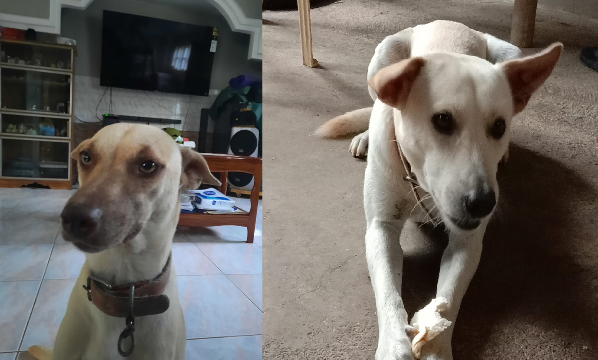
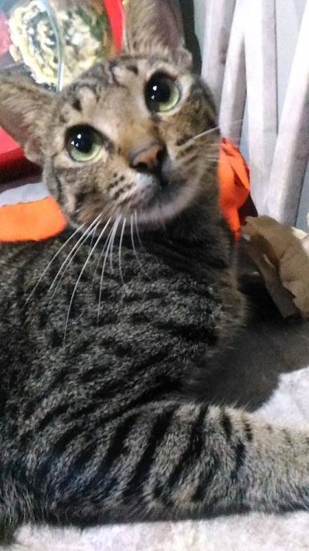

Any domestic or tamed animal kept for companionship or pleasures are considered pets, and although they are plenty to pick, I favored two types of animal, dogs and cats. In fact I have two dogs and a cat in my own. All three of them are mongrel-breeds, named Krem a boy, Kokie a girl and Pikut a boy.
 Both of my dogs came from the same litter and are three years olds,
Krem has a white fur that has a bit of tortilla brown color line on his back while his sister is Peanut brown color with a darker shade of said color line on her back, same pattern as her brother. Comparing those two’s attitude, both are sweet and naughty in their own way, they are spoiled when it comes to cuddling and occasionally tends to have a ‘Mukbang’ with some slippers.
Krem has a fun look in him, you can tell he wants to play with you when he lowers his front legs and stare back up you with those brown eyes that are sometimes obsidian color in other reflection while his tail wagged.
Kokie on the other hand prefer to play with biting, she likes to clump her jaw on your arm and drag you around wherever she so fit, when you look at her though, she has this judging look that seem to tell you that she’s ‘planning your death’ but was actually trying to get your attention.
My Cat
Pikut has its distinctive pattern of a tabby cat but has the blood of mongrel. Originally his mother ‘Mingkay’ was my pet cat but unfortunately she dead after her third litter in which only
Pikut had reached adulthood ‘in cat term’. Now this cat, boy is this cat naughty. Aside from the fact that he loves to cuddle, he is a demanding one. He usually stays around the kitchen and knew when we are done with our meals and when that occurs he begins meowing louder and louder, even attempts to enter the dining area.
But all in all I love my pets, I cried when Krem was neutered, had an argument with my mother when she angrily told me to throw Pikut away and I shouted at my dad when he tried to hit my dogs with firewood.
Yes there are times when they get in trouble, troubles in which affects our property, unfortunately for my family, I raised those animals, I feed them, I bathed them and clean their mess. They can’t do anything about it, they are my responsibly in which I highly uphold, so there’s not a chance for them to decide what to do to my pets. They are mine.